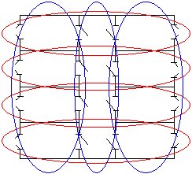
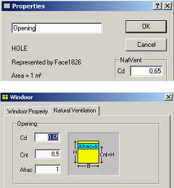
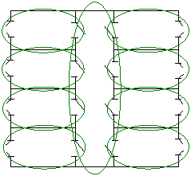
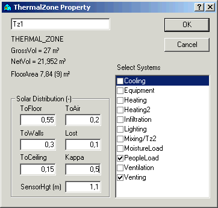
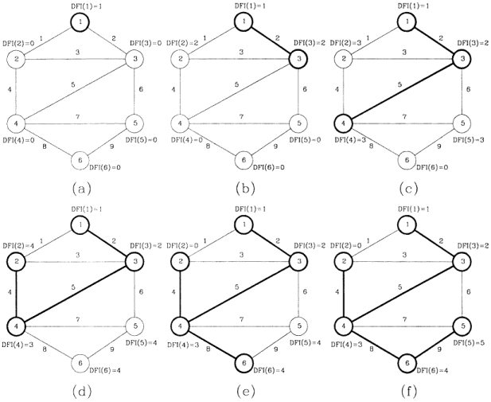
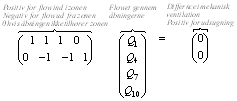
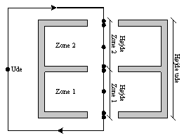
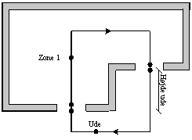
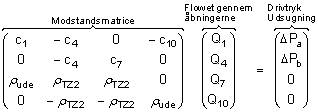
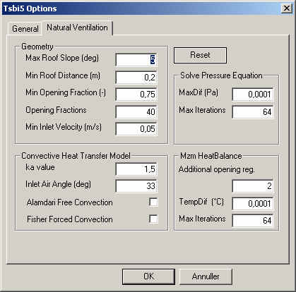

Implementation of mzm
Implementation of mzm in BSim is described in this part of the documentation. The description starts with a section on making models in BSim that utilizes the multi-zone model for natural ventilation. Take-off is made from the single-zone model with an explanation of the important issues to take into account when creating a building model. Then there is a presentation of the new issues specially related to mzm.
After presenting the model making there is a description of how the equation system is set up, including generation of spanning trees and loops and the making of calculation matrices .
This part ends with a description of how the equation system are to be solved.
Making of a BSim building model
In this section there is a description of the making of a BSim building model with respect to mzm. The description takes the single zone model as a starting point (szm) with special focus on new issues added to facilitate mzm.
Presentation of the single zone model
Additional issues compared to the single zone model is:
Choice of wind profile
At building level (Site) a wind profile have to be selected. This is used to calculate the wind velocity in other heights than 10 meters, where the wind velocity in weather data is being measured.
According to British Standard the wind velocity is calculated as:
\[ V_h = V_ {10} \cdot k \cdot h^{\alpha} \tag{1} \]
hvor:
Vh is the wind velocity in height h [m/s]
V10 is the measured wind velocity 10 meters above the free terrain [m/s]
h is the actual height above terrain [m]
k is a factor dependant on the terrain, Table 1 [-]
α is an exponent, dependant in the terrain, Table 1 [-]
| Terrain type | k | α |
|---|---|---|
| Open flat country | 0.68 | 0.17 |
| Terrain with scattered wind breaks | 0.52 | 0.20 |
| Forstadsområder | 0.35 | 0.25 |
| Bycentrum | 0.21 | 0.33 |
Table 1 Factors characterizing different terrain types.
Choice of thermal zones
Using the single zone model it is necessary to consider which of the rooms in the building that must be part of the thermal zones. In a normal thermal simulation rooms with the same thermal characteristics can be merged together in the same thermal zone. This is for instance the case for offices having the same orientation, as shown with the blue circles in Figure 1. Modeling cross ventilation will as a contract require division of the rooms into thermal zones as indicated by the red circles.

Definitions on openings
To be able to calculate the natural ventilation it is necessary to define the openings that air flows through. BSim have two types of openings; openings and WinDoor's. Openings are holes in the constructions and can not be controlled - they are always fully open. WinDoor's covers windows and doors, and the degree of opening for these openings can be controlled.
As a default, openings are activated flow elements, while WinDoor's are not. The dialogs for giving constants and activation of WinDoor's are shown in F. Both types of openings are modeled by means of discharge coefficients, and must thus have a Cd-value.
For WinDoors the open-able fraction of the WinDoor have to be defined, and in which relative height the centre of this open-able fraction is located. A WinDoor have a limited number of degrees of opening, which cen be specified by the user. If 10 degrees of opening is being used, the active part of the WinDoor can thus be 0, 10, 20, … % of the open-able area.
Only openings in the thermal envelope need to be defined as the single zone model assumes that all rooms in the same thermal zone is connected in one single open space. It must therefore be considered if there are flow resistances between the individual rooms of the thermal zone as these are not part of the simulations. REsistances from internal openings can be added at the openings of the thermal envelope.

Choice of CP-values
The used CP-values originates from (Orme et al. 1998) and is determined as average values for the faces. The user can not give his own CP-values. Orme et al. (1998) gives CP-values for rectangular buildings with equal side lengths and buildings with a side-proportion of 1:2. CP-values are also given for different roof-tilts. BSim chooses CP-values from these standards based on the geometry of the building model.
CP-values is defined for three different degree of wind exposure due to the surrounding buildings as defined as a property on the external face of the opening, see Figure 3.

Control of natural ventilation
The single zone model is activated from by using the system Venting. Venting is a natural cooling system and will only come into action if the temperature in the thermal zone that is being used as the controlling zone exceeds the defined set-point.
If there is need for cooling, BSim calculates how much outside air is needed and chooses the degree of opening that provides an air flow closest possible to the needed air-flow. The control works in the same way if Venting is controlled according to a CO2 set-point.
What is new related to mzm?
In this section issues that have changed in a model where mzm is being used compared to the single zone model.
Thermal zones
By implementing the multi-zone model division into thermal zones can by advantage be made according to the boue circles shown in Figure 1, which is the thermal most correct. If it was possible to give CP-values for each opening, it would be necessary to divide all rooms into one thermal zone, as shown in Figure 4.

Internal openings
As mzm takes into account internal openings, openings that one wants to use for air-flow must be activated just like opening to the ambient.
What is changed by introducing mzm?
In this section there is a description of changes in BSim (tsbi5) to make it possible to utilize mzm.
Iterations
The largest singe change is introduction of iterations in tsbi5, which was not needed earlier.
It has been necessary to implement three iterations in conjunction to:
Multi-zone model
Cooperation between mzm and the energy balance
Control of WinDoor's
Implementation of iterations means that the user needs to (should) decide one's attitude to the convergence criteria and the maximum number of allowed iterations.
The dialog box that define these issues are shown in Figure 5. For the two first iterations a convergence criteria and a maximum number of iterations must be given. This will ensure that the simulation do run wild. In the third iteration, control of the WinDoor's, the maximum number of opening fractions plus additional opening control to determine max number of iterations. The three iterations are described in section Control of mzm.

Imbalance in mechanical ventilation
Mzm takes into account imbalance in the mechanical ventilation air in such a way that differences between inlet and outlet air is included in the mass balance of mzm.
This means that exhaust ventilation, eg from toilets and kitchens will be handled correctly if mzm is activate for the thermal zones in question. The change compared to the single zone model, is that air inlet to a zone do not need to be ambient air. This means that air to a thermal zone with exhaust ventilation will come from one or more adjacent thermal zones and be transported through the building before it ends in the exhaust ventilation duct.
Adaptations in the source code
As BSim can simulate on zone level (real faces facing the same air node) and thus do not "know" other zones in the building, it has been necessary to make BSim "know" these other zones. This was a necessity as mzm needs information about all zones at the same time.
Creation of loops
In this section there is a description of how the loops are made. The section have three main parts:
Identification of nodes and arches
In this section there is a description on how nodes and arches are made based in the BSim model. The purpose for making nodes and arches is to connect the thermal zones through openings where mzm can be activated.
In the making of nodes and arches all openings and WinDoor's with an area larger than 0 are taken into consideration.
Nodes
There are two types of nodes:
Zone nodes
Opening nodes
Zone nodes are connected to thermal zones and the outdoor climate. One node is defined in each thermal zone with activated openings. The node is located in the same height as SensorHgt (Figure 6). SensorHgt indicates in which height the temperature of the thermal zone is recorded and which temperature the systems of the zone use as reference point. This is only relevant when vertical temperature gradients are taken into account in the simulations by means of the Cappa model.

For every opening two nodes are defined. One node on each side of the opening. The nodes are located in the geometrical centre of the active part of the opening.
Arches
The following arches are made:
between nodes for all openings
between outdoor and the external nodes for all nodes in the thermal envelope
between zone nodes and the internal node of all opening nodes in the zone
Lists with nodes and arches
Two lists are made, one with all nodes and one with all arches. The lists can be shown by clicking "check" from the "Simulation" tab of tsbi5. The lists are called "Nodes" "Arches".
Making of a spanning tree
Making of a spanning tree must include those zones that are connected to the ambient, eventually via other adjacent zones. This means that air-flow between zones can not be calculated if they are are not connected to the ambient, see Figure 7.

By making a spanning tree it has been chosen always to start in the node for the ambient. The tree is made from the following rules according to (Savić et al. 1996), called ”depth-first-search”. N is the number of nodes and P is the number of pipes (arches). The calculation of the spanning tree can be explained as follows:
Associate label DFI(n) = 0, n = 1,2,…,N, with each node in the base graph
Set j = 1
Initialize a set of arcs within the growing tree At = []
Identify the starting node ns at random or as being the “root” of the base graph
Initialize a set of nodes contained within the growing tree C = [ns], and set DFI(ns) = j
Identify Aa(ns) = [arcs in base graph connected to node ns]
Identify end-points E(ns) of the arch in Aa(ns)
Eligible adjacent nodes to ns are endpoints that are not contained within the growing tree; i.e., A(ns) = E(ns) – [E(ns) ∩ C]
If A(ns) is an empty set, A(ns) = []; i.e., there is no adjacent node that is not yet in the growing tree, then
a. DFI(ns) = 0
b. j = j - 1
c. Find a node ns‘ ⊂ C for which DFI(ns’) = j
d. ns = ns‘
e. Go to step 6
If A(ns) is a nonempty set, i.e. A(ns) ≠ [], then
a. j = j + 1
b. Associate DFI(n) = j with each node n ⊂ A(ns)
c. Choose one node ns‘ from A(ns) at random
d. C = C + [ns‘]
e. At = At + [arc whose endpoints are ns and ns‘]
f. ns = ns‘
Repeat from step 6 until all nodes have been added to the connected set, i.e., a spanning tree is formed
The lists At and C are saved and a list with arches not used in the spanning tree, Act, a so-called ”co-tree”. This list are used by making of the loops.
Explanation of calculation routines by making the spanning tree
Explanation of calculation routines by making the spanning tree is based on Figure 8 from (Savić et al. 1996) .
Calculation routines are:
The lists “Nodes” and “Arches” are used.
Two new lists, “Node list” and “Arche list”, are created.
The starting (ambient) node is identified (a), and this node is added to the Node list.
A randomly selected neighboring node is chosen (b). The node and the arch connecting the two nodes are added to the Node list and Arche list, respectively. The nodes and arches are added in sequence.
From node 3, a randomly selected neighboring node that is not already in the Node list is chosen, and the node is added to both lists.
Step 5 is repeated until a node is reached for which all neighboring nodes have already been added to the Node list (d).
The focus then shifts from the current node to the previous nodes in the Node list, following the reverse order in which the nodes were added (i.e., d → 2 → 4 → 3 → 1). The routine ends at the first node that has a neighboring node not present in the Node list. In this case, the routine stops at node 4. The procedure then continues from steps 5, 6, and 7 until no more nodes can be added.

Routines ensuring correct creation of spanning tree
A reduction of the lists are made so they only contains nodes and arches that belongs to multi-zones. Those zone nodes which was used in the creation of the spanning tree are multi-zones and the remaining zones are not. The lists "Nodes" and "Arches" are reduced so they only contains nodes from multi-zones, the ambient and arches connected to openings between multi-zones and the ambient.
If all arches have been used in the creation of the tree, the model will not contain any lops and the mzm will thus not be activated. This situation complies to the case where arch no. 1, 3, 6 and 7 are missing in Figure 8 and it will thus be impossible to create a loop.
Creation of loops
Creation of loops is made from the "breath-first-search" rules (Savić et al. 1996). The routines for creation of the loops is explained in the following:
Associate label BFI(n) = 0, n = 1,2,…,N, with each node in the base graph
Set j = 1
Choose one of the arcs from the co-tree set ai ∈ Act
Initialize a set of arcs within the ring L = [ai]
Identify the endpoints ni and ni’ of the co-tree arc ai
Initialize a set of nodes contained within a queue Q = [ni], and set BFI(ni) = j
Identify Aa = [arcs in the tree set At connected to nodes in the queue Q]
Identify endpoints E of the arcs in Aa that are not labelled, i.e., BFI(n) = 0 for all n ∈ E
Set Q = []
Set j = j + 1
Associate BFI(n) = j with each node n ∈ E
Set Q = E
Repeat from step 7 until ni’ acquires a label
Retrace back from ni’ to ni (using the tree arcs At) in decreasing order of BFI. The arcs belonging to the ring are stored in L
A list with all loops is saved in the variable L.
Making loops
The number of loops to be made is equal to the number of arches in Act. For each arch in Act a loop with the least possible number of arches is made. The loop is made solely by using arches from the spanning tree. This means that no other arch is part of Act.
The way tings are made id described below. With take-off from Figure 8, (f) the description of a loop for arch no. 1 is made:
Start with any arch from Act (g1)
Chose one of the nodes of the arch (k1)
Find all arches connecting node k1 and that belongs to the spanning tree (g2). Number them sequentially (#1)
Repeat point 2 and 3 until the other node from the starting arch is found (k2)
k3 | g5 | #2
k4 | g8, g4 | #3
k2, k6 ⇒ Node k2 found
The end-points of the arch is found by going backwards through the lists with the arches.
From node k2 chose arches with #3 that belongs to node k2 ⇒ g4
From node k4 chose arches with #2 that belongs to node k4 ⇒ g5
From node k3 chose arches with #1 that belongs to node k3 ⇒ g2
The loop consists: g1 - g4 - g5 - g2 and k2 - k4 - k3 - k1
As all possible paths are used every time at every node, it will always be the loop with the shortest path (least number of arches) that is found first.
Making of overriding loop system
At the beginning of the simulation an the overriding loop system is made - the loop system that exist when all openings are open and all multi-zones are activated. This system constitutes the starting point for making loop systems during the simulation.
Making of loop-system on hourly level
At the start of every hour a loop system is made that is based on those zones and openings that has been activated for the actual hour. The making of the loop system is done from the overriding loop system. This means that only zones which can be handled by mzm are treated.
Making of loop systems at time step level
At time step level WinDoor's can shift status from open to closed or the opposite way due to the control of the openings. In case of shifts, the loop system is made again.
The possibility of thermal zones shifting category are also taken into account, eg a multi-zone can become a single-zone by closing of openings.
Making of calculation matrices
In this section a description of creation of the calculation matrices is given. The calculation matrices is made from the actual loop system, the characteristics of zones and openings, and the driving pressure from wind and temperature gradients.
By making the matrices a simplified version of the loops are being used. The arches that connect zone nodes with openings gives no resistance and are therefore excluded from the matrices, see Figure 9.
The calculation matrices are made with air flows as the unknown factor. This is most convenient as this is used in the calculation of the resistance through the individual opening and takes part in the preservation of the mass balance.
Overriding preservation demands
The equation system is made so mass and energy are preserved.
Preservation of mass
For zones the continuity equation is valid, which means that air mass added must be equal to the mass of air removed:
\[ \sum \dot m_{in} - \sum \dot m_{out} = \dot m_{resulting,removed} \tag{2} \]
and
\[ \dot m_{resulting,removed} = \dot m_{mech, removed} - \dot m_{mech, supplied} \tag{3} \]
where:
min is mass flow into the zone through openings [kg/s]
mout is mass flow out of the zone through openings [kg/s]
mresulting,removed is the resulting mass flow removed by mechanical ventilation [kg/s]
mmech,removed is the mass flow removed by mechanical ventilation [kg/s]
mmech,supplied is the mass flow supplied by mechanical ventilation [kg/s]
Preservation of energy
For the loops, energy preservation is valid, which means that energy losses due to friction in the loop is equal to the amount of energy added to the loop by wind and temperature gradients:
\[ p_{Tab, Ring} = \sum \frac{\rho \cdot \dot V_i^2}{2\cdot c_d^2 \cdot A_i^2} \tag{4} \]
where:
ΔpTab,Ring is the pressure loss in the loop from openings [Pa]
ρ is the density of the air [kg/m³]
Vi is the volume air flow through openings [m³/s]
Cd is the flow coefficient [-]
Ai is the area of the opening [m²]
and
\[ p_{Tab, Ring} = \Delta p_{Buoyancy} \cdot \Delta p_{Wind} \tag{5} \]
where:
ΔpOpdrift is the driving pressure from temperature gradients [Pa]
ΔpVind is the driving pressure from wind [Pa]
For all loops a positive revolution direction must be defined. The positive direction for each loop is defined as the direction that results in a positive driving pressure.
Further a positive direction for the air flow must be defined for each of the arches. This is defined as being positive when going from node 0 to node 1 of the arch.
Arches are turned to ensure that they have the same positive direction as the loop. This means that the second (last) node of each arch is the first node in the next arch.
The collective equation system consists of two parts. One part for loops ensuring preservation of energy and one part for the nodes ensuring preservation of continuity. Both systems are of the type:
\[ [M_1][V_1] = [V_2] \tag{6} \]
hvor:
M is a matrix
V is a vector
Example for making calculation matrices
In Figure 9 there is a sketch of a BSim model with nodes and loops. The nodes and arches are numbered continuously from 0 and the number of the arches have been underlined. The model consists of two zones and four openings. This gives two loops shown by red and green arrows.
As described earlier, only loops that belongs to an opening are being used. This is arch number 1, 4, 7 and 10 in Figure 9. The flow through these arches are in the following denoted Q and the resistance over the openings c.
The loops are denoted a and b, where the red loop is a and the green loop b. The positive direction for the loops are shown by arrows.

Equation system for loops (preservation of energy)
The equation system consists of a matrix with resistances for openings in the individual loop, a vector with the flow through each opening and a vector with the driving pressure for each loop:

This equation system ensures that the volume of air flowing into one zone is equal to the volume of air flowing out of the zone. This is not the same as fulfillment of the continuation condition as the mass of the air varies due to temperature variations between zones. The density of the air must thus be multiplied in the matrix. The density depends on the direction of the air flow, the air density is used for the zone where the air comes from.
This is valid for positive values Qn. For negative values of Qn the density is calculated at the second node. The equation above will become (give the assumption that there are positive flow in both loops - note that the signs are preserved):

For the difference in mechanical ventilation there is difference in the density of the exhaust air. This means that the density of the inlet air and the outlet air are multiplied to the volume flow before subtraction.
Total equation system
The two equation systems are reduced to one, by gathering the two matrices, the vectors with driving pressure and the differences in the mechanical ventilation:

Driving pressure from temperature gradients
The driving pressure from temperature gradients can be calculated from differences in the density of the air between the openings that air flows through.
As default BSim calculates as if there is full mixing of the air in a zone and thus a uniform temperature representing all air in the zone. Further it is only possible to use one vertical temperature gradient in a zone. The general equation for the density of the air can be calculated from (Hansen et al. 1997):
\[ p = \frac{m}{V} = 0,0034837 \cdot \frac{p}{T} - 0,0013169 \cdot \frac{p_d}{T} \tag{7} \]
where:
ρ is the density [kg/m³]
m is the mass [kg]
V is the volume [m³]
p is the total pressure, partial pressure [Pa]
pd is the total pressure, vapor pressire [Pa]
T is the temperature[K]
Differences in density are recalculated to differences in pressure under the assumption of hydrostatic pressure distribution, generally given as:
\[ \Delta p_{e (\Delta Z_{i,j})} = - \int_{z_i}^{z_j} g \rho_e(z) dz \tag{8} \]
where:
Δp is the pressure difference[Pa]
g is the gravity [m/s²]
z is the level [m]
As the density of air is reverse proportional to the temperature, an integration give different results in zones with and without vertical temperature gradients.
Density of moist air without vertical temperature gradient
At constant temperature an integration of the equation above gives the following:
\[ \Delta p_{e (\Delta Z_{i,j})} = - \rho_e g\Delta z_{i,j} \tag{9} \]
Density of moist air with linear vertical temperature gradient
For a linear, vertical temperature gradient an integration of the equation above gives the following:
\[ \Delta p_{e (\Delta Z_{i,j})} = - g \cdot \frac{K_1}{K_2} \left[ \ln(T_j + K_2 z_j) - \ln(T_i + K_2 z_i) \right] \tag{10} \]
where K1 and K2 is given by:
\[ K_1 = 0,0034837 \cdot p - 0,013169 \cdot p_d \tag{11} \]
where:
p is the total pressure, partial pressure[Pa]
pd is the total pressure, vapor pressure [Pa]
and:
\[ K_2 = \frac{T_j - T_i}{z_j - z_i} \tag{12} \]
where:
z is the level [m]
T is the temperature [K]
Implementation in BSim
Level-definitions
The level for all openings must be known to be able to calculate the driving pressure from temperature gradients. All openings can be located in any level.
For external openings, the level for the node facing the ambient is being used. In most cases this will give a correct level for calculation of the driving pressure, see Figure 10 and Figure 11.
The average level is being used in case of internal openings.
All changes in temperature, moisture content and density happens at the node for the ambient. For this reason all openings are calculated as indoor air. For internal openings, changes is assumed to happen in the centre of the opening.


Calculation
An integration is made for each zone being part of the loop and for outdoor if the loop contains the node for outdoor. In every zone, the level for the two openings being part of the loop are calculated. So is the thermal driving pressure according to Equation 9, Cappa is equal to 1 or Equation 10 if C differs from 1.
Driving pressure from wind
A loop may contain the node for the ambient. If the loop do not contain the node for the ambient, it is an internal loop and the driving pressure thus not influenced by the wind. If the loop contains the ambient node, there will always be a contribution from the wind. This is because the loop starts outdoors and afterwards enters the building to finally returning to the ambient. As there is only one node for the ambient, a loop will never cross the therma envelope more than twice, see Figure 9.
For those loops containing the node for the ambient, the driving pressure from the wind is determined as:
\[ \Delta p_{vind} = \Delta C_p \cdot \frac{\rho \cdot U_{ref}^2}{2} \tag{13} \]
where:
ΔCP is the difference between the two CP values [-]
Uref is the reference wind speed, calculated at the highest point f the building [m/s]
\[ \Delta C_p = C_{p, første} - C_{p, anden} \tag{14} \]
The first CP-value is always attached to that node in arch number 2 of the loop-list that faces "outdoors". The second CP-value is always attached to that node in the last arch in the loop-list that faces "outdoors", respectively node 9 and 2 in Figure 9.
The determination of the driving pressure in a bulleted list form looks like:
Does the loop contain the node for outdoors?
If NO
Δpwind equals 0
- If YES
Find CP for the second and the last arch in the list (node number 2 and n-1)
Calculate ΔCP according to Equation 14 and Δpwind according to Equation 13
Total driving pressure
The total driving pressure is the summation of all driving pressures from wind and temperature gradients:
\[ \Delta p_{Total} = \Delta p_{Termisk} + \Delta p_{Vind} \tag{15} \]
The total driving pressure is the summation of all single contributions along the loop, calculated with sign. The contributions is positive if they contribute to force the air in the positive direction of the loop.
\[ \Delta p_{Total} = g \sum - \int_{z_i}^{z_j} \rho_e (z) dz + \Delta C_p \frac{\rho \cdot U_{ref}^2}{2} \tag{16} \]
Making of resistances
That total resistance in a loop depends on the flow volume. The flow volume will always be exactly that size that the resistance in the loop is equal to the driving pressure.
Many different equations for calculation of the resistance through an opening or through a component as a function of the flow. Here the classical orifice have been model implemented:
\[ Q = C_d \cdot A \cdot \sqrt{\frac{2 \Delta p}{\rho}} \tag{17} \]
where:
Q is the flow [m³/s]
Cd is the discharge coefficient [-]
A is the area of the opening [m²]
Δp is the loss of pressure over the opening [Pa]
or given by the pressure difference:
\[ \Delta p = Q^2 \frac{\rho}{C_d^2 \cdot A^2 \cdot 2} \tag{18} \]
As LTM have been chosen to solve the equation system, the pressure drop over the openings must be linear regarding Q:
\[ \Delta p = Q \cdot \frac{Q \cdot \rho}{C_d^2 \cdot A^2 \cdot 2} \Rightarrow \Delta p = Q \cdot C \tag{19} \]
where C is
\[ C = \frac{Q \cdot \rho}{C_d^2 \cdot A^2 \cdot 2} \tag{20} \]
Solving the equation system
The total equation system is given by:

Start
At the beginning of a calculation the equation system must be initialized. The equation system must be solved with respect to Q. The driving pressure and eventual imbalances in the mechanical ventilation is constant during the calculation, but if the sign of Q is changed, the densities must be updated as air comes from the neighbor zone.
The matrix of resistance elements for the upper part is given as:
\[ C = \frac{Q \cdot \rho}{C_d^2 \cdot A^2 \cdot 2} \tag{21} \]
As all resistances can not be zero, the flow, Q, must be different from zero. A guess on the flow through the openings is being made. In the first calculation all flows are set equal to 1. In the following calculations the flow from the previous calculation is being used.
Solving method for the equation system
A simple Gauss reduction is being used to solve the equation system and coded with information from William et al. (2002) as a starting point.
Solving routine
The solving routine, given as a bulleted list, is as follows:
Making of equation system
Initiation of equation system
Solving equation system
Updating resistance matrix based on new values of Q (both resistance and density)
Solving equation system
Control of convergence criteria
Point 4 to 6 repeated until convergence of the equation system is found
Convergence criteria
The convergence criteria is calculated according to the equation below. The driving pressure is compared to the resistance over the opening, calculated according to Equation 18. The maximum deviation must be less than the convergence criteria "MaxDif".
\[ \max \left( |p_{Total} - \Delta p_{Resistance}| \right) \leq MaxDif \tag{22} \]
where:
ΔpTotal</sub> is the total driving pressure for one loop [Pa]
ΔpResistance</sub> is the resistance through the openings [Pa]
MaxDif is the convergence criteria [Pa]
The convergence criteria is as default given as 0.01 Pa. The user have the option to change the criteria, Figure 12.

To ensure that the simulation do not run into a loop without an exit, the maximum number of allowable iterations "Max Iterations" must be given (default 32).